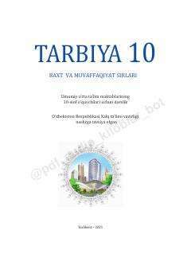

T110-sinf o'quvchilari uchun ma'naviy-axloqiy tarbiya va hayotiy ko'nikmalar darsligi.
Ushbu darslik 10-sinf o'quvchilari uchun mo'ljallangan bo'lib, oilaviy qadriyatlar, inson va jamiyat, ijtimoiy tarmoqlar hamda kasb tanlash kabi muhim mavzularni qamrab oladi. Kitob yoshlarning ma'naviy barkamol bo'lib yetishishi va zamonaviy tahdidlarga qarshi kurashish ko'nikmalarini shakllantirishga xizmat qiladi.